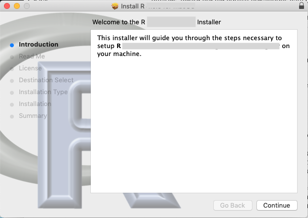
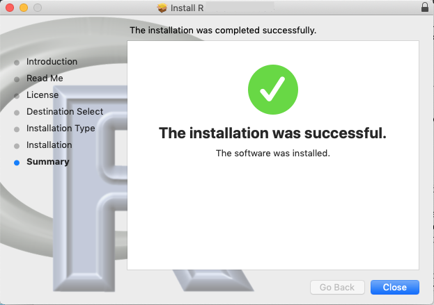
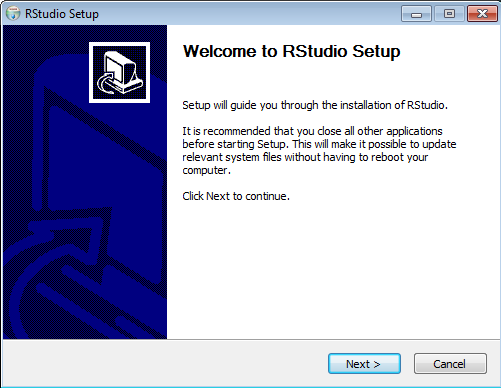
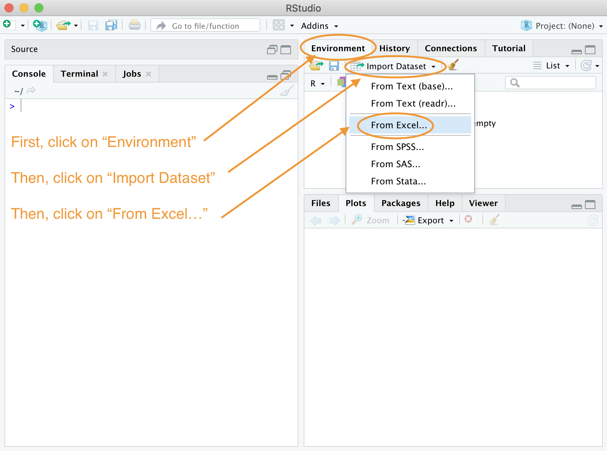
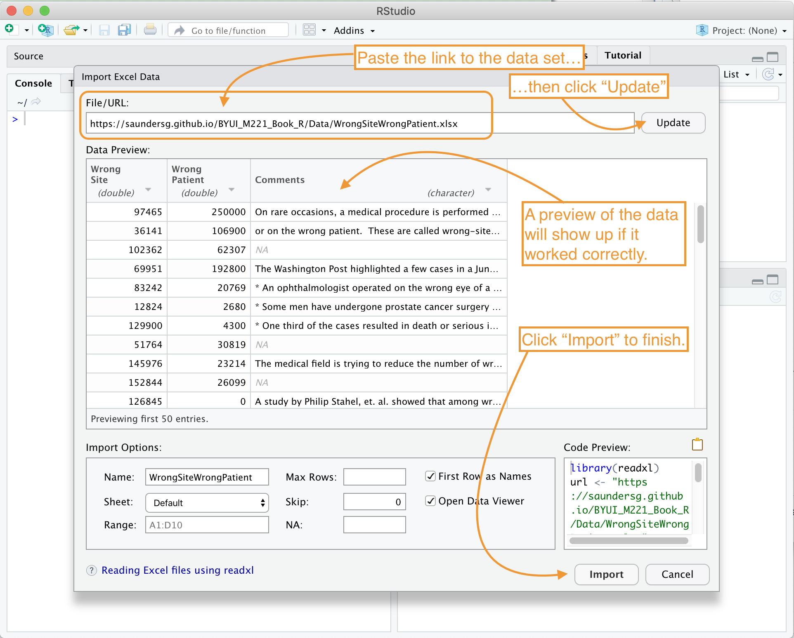
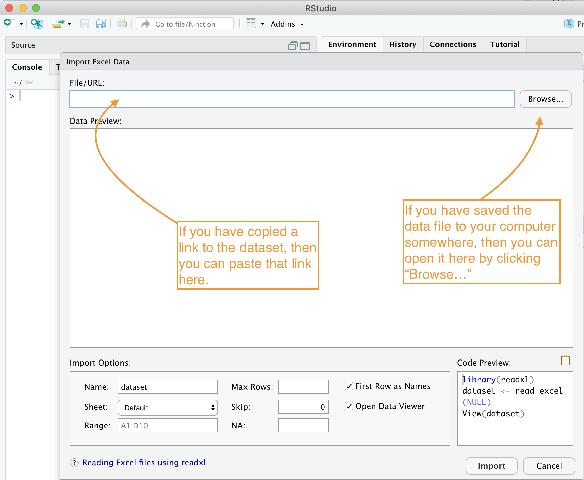
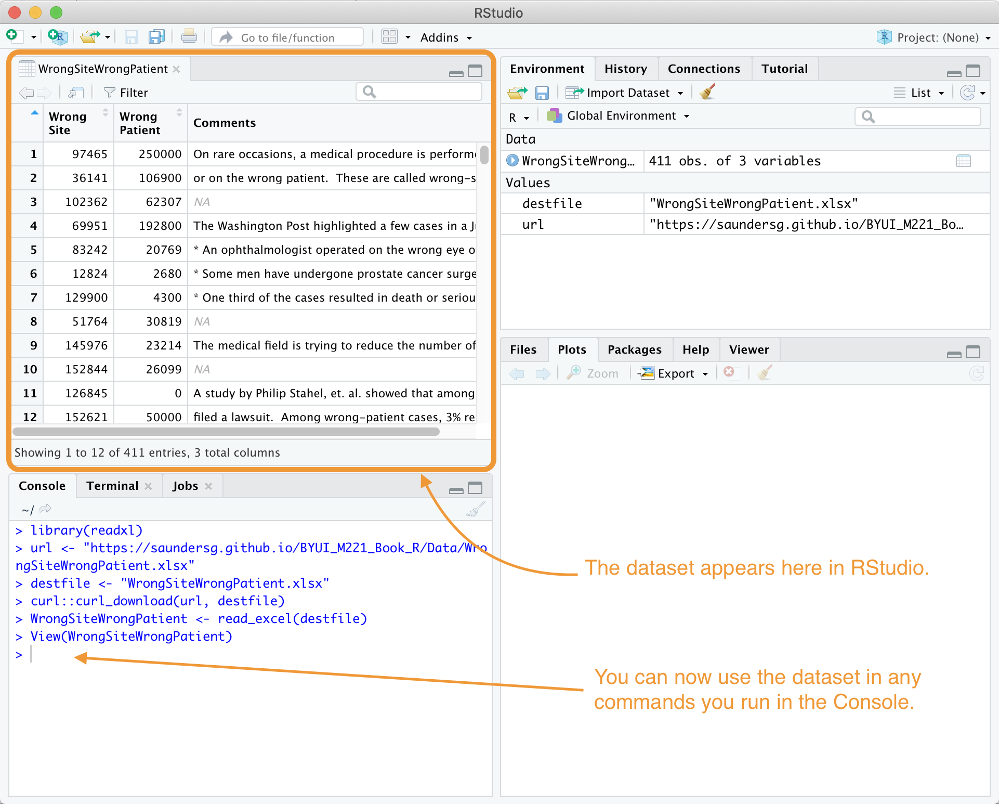

R Help
We will use RStudio for all of our data analysis this semester. This page will guide you through the installation process and help you get started working with data in R.
Installing R and RStudio
Quick Instructions
| First, install: |
|
| Second, install: |
|
If you are using a Chromebook or other “web browsing only” type computer that will not allow you to install software, then set up an account at RStudio Cloud instead of installing R and RStudio as shown here.
Just accept all of the default options when installing.
Detailed Instructions
To install the statistical analysis program RStudio you will first need to install a piece of software called R. Funny name, right? (There was originally a software called “S” for statistics, and then “R” was invented later on. Part of the reason they used “R” was to claim that “R” was a “leap ahead” of “S.”)
| Install the R Software by clicking here: |
|
Once that download finishes, open the resulting file. It should look something like this:

Click “Continue” or “Okay” or “Accept” for all of the several various windows that will appear. Once the installation is complete you should get a window like this:

Now that R is properly installed on your computer, we need to install RStudio. RStudio is an app that runs R inside of it and provides you with many other tools that go way beyond what R can do. This is why R must be installed first, so that RStudio can use it. You will never need to open R yourself. Just use RStudio. But without R, RStudio won’t work properly.
| Install the RStudio app by clicking here: |
|
Once the RStudio installer downloads, open the resulting file. A window like this should appear:

Again, work through the installation process, agreeing with all the defaults and terms of conditions.
Once the installation finishes you can use your computer’s search bar to search for “RStudio” in your apps. It will have an icon like this:  .
.
Once you have successfully opened RStudio it should look like this:

Reading in Data
Quick Instructions
First, open the “Import Dataset” option from within RStudio.

Second, either paste in a link to a data set, or “Browse” to find a dataset that is saved somewhere on your computer.

Detailed Instructions
There are many ways to open a dataset in RStudio. One of the easiest methods is to use the “Import Dataset” button. This button can be found by
- Opening RStudio

- Locating the “Environment” window of RStudio, typically in the top right portion of RStudio.
- Locating the “Import Dataset” button inside the “Environment” window.
Once you click on the “Import Dataset” button, a menu will appear. Since all datasets in this class are stored in Excel files with a “.xlsx” file extension at the end of the file name, we will always use the option “From Excel…” to import our datasets.
After selecting the “From Excel…” option, a new window will appear inside of RStudio. It will look like this.

If you have saved the file on your computer already, then you can “Browse” to find the file. However, in this class, it will be more common that you are provided with a link to a file, like this: WrongSiteWrongPatient. By right-clicking on the link and selecting “Copy Link Address” you can then paste it into the “File/URL:” box in RStudio and then click the “Update” button. Like this:
Once a data set is read into RStudio, it will appear in the top-left screen of RStudio and is now available for use in the “Console” inside of commands like boxplot(...), mean(...), summary(...), and so on.

Copyright © 2020 Brigham Young University-Idaho. All rights reserved.